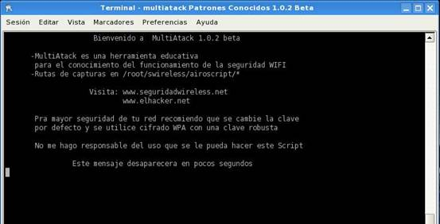
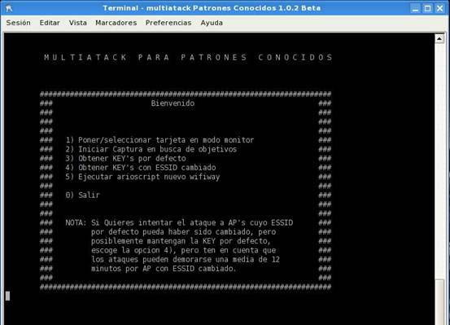
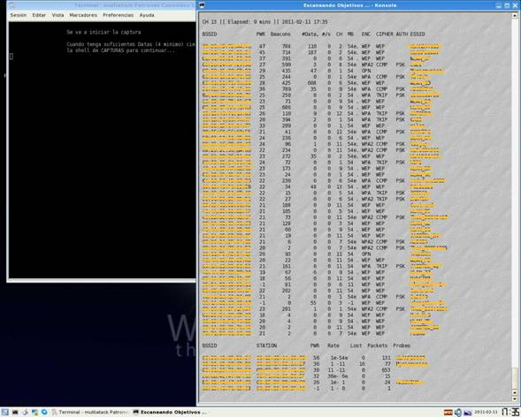
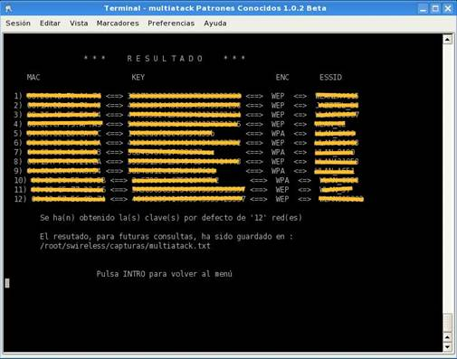

Multiatack Patrones Conocidos
Una vez más vamos a ver que es necesario cambiar las claves que vienen por defecto.
La utilidad que vamos a ver nos permite ver las claves que vienen por defecto, de todas las redes que tengan un patrón conocido y obtengamos de ellas al menos 4 DATAS y en algunos casos ninguna, ¡ojo! también aunque se las haya cambiado el nombre por defecto, pero no la clave.
Arrancamos esta utilidad y se nos presenta la siguiente imagen.

Y seguidamente se nos presenta la pantalla principal en la que se nos presentan 5 opciones, empezamos con la primera que es poner el adaptador en modo monitor, aunque para este ejemplo no es necesario, ya que no vamos a inyectar, simplemente vamos a poner la oreja para escuchar todo lo que sucede a nuestro alrededor sin intervenir. Por eso si queremos la ponemos en modo monitor con la opción 1 y en caso contrario seleccionamos la opción 2 para iniciar la escucha.

Cuando iniciamos la captura de datos nos aparece la siguiente pantalla, que se va rellenando con los datos de las redes que están a nuestro alrededor, os puedo decir que de las 45 redes que se observan, 32 tienen el nombre que da el MODEM por defecto, un porcentaje muy alto de gente que no tiene convenientemente la red protegida, incluso 2 la tienen libre, aunque pueden estar protegidas, bien por MAC o por DHCP desactivado, pero este tipo de protección no es suficiente, ya que es fácil de saltar.
Y de los 13 que han cambiado el nombre de la red, 10 tienen encriptación WPA, pero seguro que alguno de ellos ha dejado la clave por defecto, lo que nos lleva a la conclusión de que son pocos los que tienen la red inalámbrica convenientemente protegida bien por desconocimiento ó bien por desidia.

Una vez que estamos un rato a la escucha van subiendo las datas de las redes en las que sus usuarios están haciendo uso de ellas, yo para este ejemplo he estado 9 minutos como se ve in la imagen de arriba y entonces cerramos la pantalla y nos aparece el menú principal, entonces seleccionamos la opción 3 y empieza a buscar las claves por defecto de todas las redes que tienen nombre con un patrón conocido y prácticamente al instante nos sale la siguiente pantalla, en la que aparecen las claves de estas redes.

Como se ve en la imagen ha conseguido las claves de 12 redes de las 45 que tenemos a nuestro alrededor en tan solo 9 minutos Conclusión otra vez hemos demostrado que es necesario cambiar el nombre y la clave que traen por defecto los MODEM.